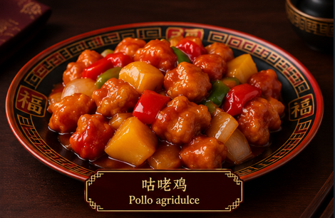

Ingredientes
- 500 g de pechuga de pollo, cortada en trozos
- 1 pimiento rojo
- 1 pimiento verde
- 1/2 cebolla
- 150 g de piña en trozos
- 3 cucharadas de salsa de soja
- 4 cucharadas de kétchup
- 3 cucharadas de vinagre de arroz o de manzana
- 2 cucharadas de azúcar
- 1 cucharada de maicena
- 100 ml de agua
- Aceite para cocinar
- Sal al gusto

Elaboración
- Corta el pollo en trozos pequeños y sazónalo ligeramente.
- Disuelve la maicena en un poco de agua y mezcla con el pollo. Esto ayudará a que quede más jugoso y dorado.
- Calienta aceite en una sartén o wok y cocina el pollo hasta que esté dorado y completamente hecho. Retira y reserva.
- Saltea la zanahoria y los guisantes durante 3–4 minutos.
- Para la salsa, mezcla la salsa de soja, el kétchup, el vinagre, el azúcar y los 100 ml de agua.
- Añade la salsa a la sartén y cocina 2–3 minutos hasta que empiece a espesar.
- Incorpora la piña y el pollo. Cocina otros 3–4 minutos, removiendo para que todo quede bien cubierto.
- Sirve caliente, solo o acompañado de arroz blanco.
Descarga nuestra receta aquí